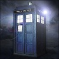
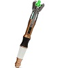
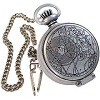
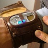

What would a science fiction show be without the gadgets? On this page, I go over just a few of the toys in the Doctor’s arsenal. While there are always more opportunities for more gadgets added, a rare few are trusted enough to have recurring appearances on the show.
The TARDIS

TARDIS stands for Time And Relative Dimension In Space, and although it is an acronym, it is often written with lowercase letters. The Tardis is the Doctor’s main method of travel and can travel through space and time. While a young boy on Gallifrey, his home planet, the Doctor stole the Tardis and ran away. Over time, the Doctor somewhat explains why he ran away, but I wouldn’t want to give away too much.
The Sonic Screwdriver

The Doctor does not like guns, in most incarnations, but he still needs a tool to operate, and thus he has his sonic screwdriver. This marvelous contraption has the ability to lock and unlock almost everything, and works on just about any material. Unfortunately it does not work on wood, which gets the Doctor stuck on more than one occasion.
The Fob Watch

This device allows the Doctor to store his personality and memories while he disguises himself as a human. It enables him to keep his knowledge safe while maintaining a hidden position. The watch is placed under a perception filter which makes the Doctor uninterested whenever he looks at it. If the Doctor were to look into it, his normal state of a timelord would be restored to him.
The Vortex Manipulator

Like the Tardis, this device allows the user to travel through time and space, but in a less flashy, less fascinating way. It is the main method of travel for the Time Agents, whose presence, purpose, and reason for existence are not fully explained, as far as I can tell. Jack Harkness uses one, but the Doctor deactivates it because he believes that Jack can cause too much trouble if he retains the ability to travel through space and time. Personally, I am with the Doctor on this one.